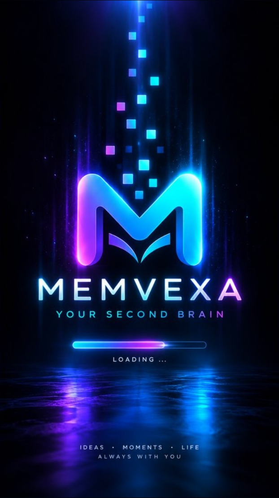

AndroidMEMVEXA
MEMVEXA ist eine Gedächtnis-App für Android: Erinnerungen, Notizen, Dokumente, Aufgaben und Termine übersichtlich und lokal organisieren.
APPS · PRIVACY · SUPPORT
Entdecke MEMVEXA, die Android-Gedächtnis-App für Notizen, Erinnerungen und Dokumente, AmbientGuard zur Bluetooth- und WLAN-Prüfung sowie CreateMyNFT für KI-gestützte NFT-Entwürfe. Hier findest du App-Informationen, Testzugänge, Datenschutz und Support.
UNSERE APPS

AndroidMEMVEXA ist eine Gedächtnis-App für Android: Erinnerungen, Notizen, Dokumente, Aufgaben und Termine übersichtlich und lokal organisieren.
AmbientGuard ist ein Android-Tool zur Prüfung sichtbarer Bluetooth-Geräte und WLAN-Netze. Auffälligkeiten lassen sich lokal dokumentieren.
CreateMyNFT bietet eine kostenlose Base-Sepolia-Demo mit NFT-Ideen, Test-ETH und Wallet-Minting. Die Pro-Version für Mainnets ist in Vorbereitung.
Auch künftige Apps erhalten eigene Bereiche für Produktinformationen, Datenschutz und Support.